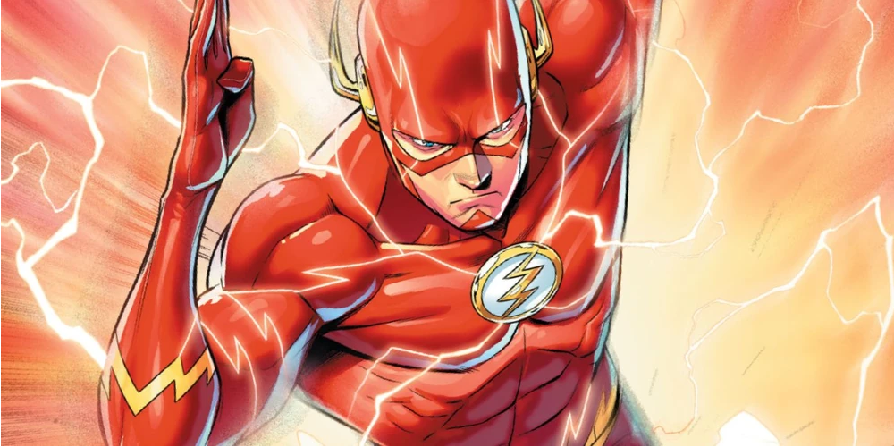

Imagine leaping over skyscrapers, running faster than the speed of sound, or even manipulating matter with your mind. While these abilities are the hallmarks of our favorite superheroes, many of them can be explained by science! This page dips into the science behind some famous superhero powers.
To understand how Superman defies gravity, we have to understand lift and aerodynamics! By understanding Bernoullis' principle, which states that an increase in speed of a fluid (or air) results in a decrease in pressure, we can unravel the mystery behind Superman's ability to fly.
The Invisible Woman takes us on a fun journey into the realm of optics. By manipulating light waves and bending them around her body, she can render herself invisble to the naked eye. Explore concepts like refraction and diffraction to unravel the scientific principles the lie behind the Invisible Woman's ability to vanish from plain sight!

The Flash introduces us to the concept of time dilation. According to Einstein's theory of relativity, as an object approaches the speed of light, time slows down for that object relative to an oberserver at rest.
All images CC-BY-SA from fandom.com